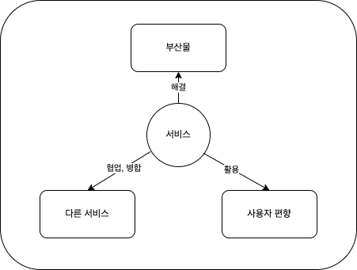
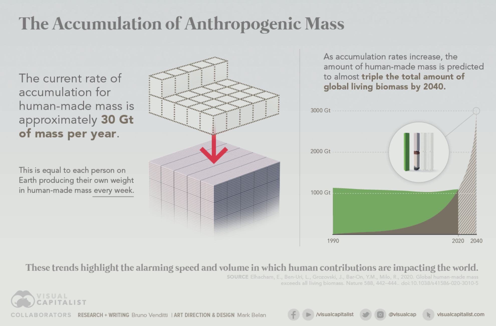
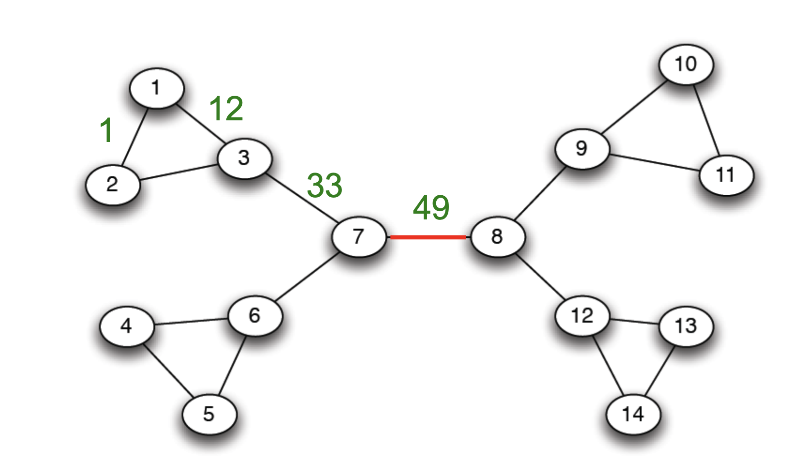

L8. 서비스의 맥락성
서비스간의 관계와 혁신
Minseop Lee(Programs in Cognitive Science, SNU)
2022-11-8(Tue)
강의 목표
- 서비스 간의 관계와 혁신, 서비스 생태계 이해
- 우리 팀만의 지표 만들기와 서비스 기획
서로 다른 계통이 융합되는 사례
- 진핵생물의 탄생
- 세포내 공생설
- 서로 다른 성질의 원핵생물들이 생존을 위해 공존을 모색하다가 진핵생물로 진화하게 되었다는 가설
- 다른 원핵생물에게 먹힌 원핵생물이 소화되지 않고 남아 있다가 공생하게 된 것으로 생각된다.
- ‘협동’, ‘관대함’
세포내 공생설

기술 이전의 첫 성공사례
- 갈고 닦인 독자적인 두 능력이 하나로 합쳐져 더 크고 더 나은 것을 만들어냄.
- 요즘 우리는 구글, 아마존, 제너럴모터스 등의 거대 기업이 몇몇 작은 신생 회사를 집어삼켰다는 기사를 거의 매일 접한다.
- 언제난 성공적인 것은 아니지만 진화에서 최초의 대부흥은 바로 이렇게 생겨남.
비즈니스 영역에서의 사례
- 비즈니스 영역에서는 이러한 사례가 빈번하게 발생하고 있음.
- 많은 대기업들은 사업영역의 확장을 위해 인수할 스타트업팀들을 물색하고 있음.
- 자연계에서도 그러한 것처럼 융합되는 계통들은 그 자체로 기능을 잘 수행하고 있어야 함.
진화의 대변혁
진화의 패턴
- 개별 기능의 발현에서는 일단 많이 만들어내서 덜어내는 ’생성과 시험’의 절차를 따름
- 위의 대변혁 사례들은 모두 협력과 분화를 통해 유연성과 다양성을 확보한 사례
- 이러한 거대 진화는 협력과 분화를 통해 생성과 시험이 용이하게 발생할 수 있는 구조를 만들게 됨.
자연선택과 설계적 태도
- 진핵생물의 탄생은 누가 설계한 것이 아니라 오랜시간 적절한 우연과 함께 자연선택의 원리에 따라 탄생한 것
- 인간의 문화와 인공물 등 설계적 태도를 통해 만들어진 것들은 그보다 더 빠르게 생성과 검증을 시행할 수 있음.
설계적 태도
- 우리는 어떻게 이해할 수 있는가?
- 창의성은 어떻게 나타나는가?
네트워크의 힘
- 창의적인 아이디어는 천재적인 개인의 발상으로부터 바로 나오는 것이 아님.
- 창의적인 아이디어가 나올 수 있는 토양 아래서만 나타날 수 있음.
- 이러한 토양은 비슷한 목표를 가진 사람들이 많이 모여 있는 것 그 자체이다.
교육 격차의 사례
- 미국에서 부유한 부모를 둔 아이는 가난한 집안에서 태어난 아이보다 대학을 졸업할 가능성이 2.5배 이상 높음
- 가족의 소득, 인종, 부모의 학력, 문화, 지역사회가 모두 뒤얽힌 문제
- 학교에 들어가기 전까지 고소득층 가정의 아이는 생활보조비를 받는 가정의 아이에 비해 3000만 개의 단어를 더 많이 듣는 것으로 추정된다.
- 아이가 사용하는 단어의 86~98퍼센트는 부모가 사용하는 어휘에서 나온다.
- 어린시절의 상호작용이 미치는 효과는 시간이 지날수록 눈덩이처럼 커진다.
사회적 자본의 힘
- 왜 우리의 행복과 복지는 우리의 부모 그리고 우리가 태어난 지역사회와 그토록 강하게 연결되어 있는 것일까?
- 교육에 엄청난 차이를 이해하는 핵심에 ’정보’가 있다.
이주 기회 프로그램

이주 기회 프로그램 실험 결과
- A집단이 이주를 할 당시 13세 이하였던 아이들은 20대 중반이 되었을때 소득이 대조군 C에 비해 약 30퍼센트 이상 높았다.
- 당시 8세였던 아이들은 이동을 통해 생애소득 30만달러(약 3억 6000만원)의 혜택을 받은 것으로 추산
- A집단의 아이들은 대학에 갈 가능성이 16퍼센트 더 높았고, 상당수가 상위권 대학에 갔으며, 그 이후에도 가난한 지역에 살거나 한 부모 가정이 되는 확률이 낮았다.
- 반면 대부분 이사를 하지 않았던 B집단의 변화는 기대만큼 크지 않았다. 여분의 돈은 생활에 유용하게 사용되었겠지만 아이들의 삶에 큰 변화를 만들지 못했다.
아이를 잘 키우는 비결: 동네가 중요하다.
사회적 자본과 일자리 네트워크
- 풍부한 인맥을 지녀 면접을 볼 기회를 더 많이 얻게 된다면 고용될 확률은 올라가고 기대 연봉도 높아진다.
- 고용은 고용되거나 실직 상태 있거나 둘 중 하나라서, 많은 제의를 받거나 기회를 만드는 것이 고용의 확률을 높일 수 있는 방법
- 1/2 -> 3/4 -> 7/8 -> …
- 전체 일자리 정보 중 강한 관계를 통해 얻을 수 있는 일자리는 전체의 6분의 1, 나머지는 중간 혹은 약한 관계로부터 구한 것.
서비스 기획에서의 맥락, 생태계, 네트워크의 중요성
- 무엇인가를 열심히 기획하는 것도 중요하지만,
- 무엇인가를 같이 열심히 하는 환경에 나를 가져다 놓는 것만으로도 상당히 큰 효과가 있을 수 있음.
서비스 기획에서의 맥락, 생태계, 네트워크의 중요성
- 우리 팀이 다루려고 하는 문제에 대해 명확히 설명하고 배경지식을 통일시키려는 노력 필요
- 설득을 해야하는 대상이 팀원이든 외부인원이든 먼저 고민한 코어팀원보다는 배경지식이 약한 것이 당연
- 공유의 영역을 넓히면 창의적인 아이디어는 더 쉽게 나올 것.
서비스 기획에서의 맥락, 생태계, 네트워크의 중요성
- 지형 파악을 잘 해서 완전히 새로운 시장이라면
- 새로운 시장이 아니라면 생태계 내에서 우리팀이 제공할 수 있는 뾰족한 가치에 대해서만 집중
- 그래야 상생도 되고, 나중에는 융합의 기회까지도 생길 수 있음.
서비스 기획에서의 맥락, 생태계, 네트워크의 중요성
나 자신
그리고 아이디어
회사와 서비스
를 고립시키지 말고 확산, 공유, 연결시키려고 노력해야 함.
서비스의 맥락성을 구성하는 요소(정리)
전체 강의 내용 정리
L1. 문화의 방대한 공간
전체 강의 내용 정리
L2. 공간속 탐색과 개발

전체 강의 내용 정리
L3. 진리의 구조, 모듈성
전체 강의 내용 정리
L4. 효과적인 팀
- 팀 내 상호작용과 커뮤니케이션이 갖추어야 할 덕목
- 이타성
- 진실성
- 신속성
전체 강의 내용 정리
L5. 적응과 부산물

전체 강의 내용 정리
L6. 서비스의 적응으로서 인간의 근본동기

전체 강의 내용 정리
L7. 서비스에 영향을 주는 사용자 편향
- 편향된 전달
- 내용 편향
- 맥락 편향
- 명성 편향
- 순응 편향(빈도 편향)
전체 강의 내용 정리
L8. 서비스간의 관계와 혁신
우리 팀만의 지표를 통한 서비스 기획 cheat sheet
- 우리팀(서비스)이 다루고자 하는 근본동기는 어떤 것인가?
- 1에서 정한 동기를 충족시켜주다가 발생하는 문제와 해결방법은?
- 1에서 정한 동기를 충족시켜주면서 따라오는 동기는?
우리 팀만의 지표를 통한 서비스 기획 cheat sheet
- 1,2,3 번에서 도출된 동기들을 극대화 해줄 수 있는 장치가 있을까?
- 위의 모든 문제가 명확해져서 팀원과 주변의 조력자에게 쉽게 이해시키고 문제상황을 설득할 수 있는가?
- 해결하려는 문제가 기존의 서비스들과의 관계에서 좋은 위치를 차지하고 있는가?
우리 팀만의 지표가 필요한 이유
- 서비스가 잘 운영되는지 쉽게 알 수 있는 지표 선정
- 독특한 지표는 그 자체로 서비스의 가치를 말해줌
엄밀하게 검증하는 것과 빠르고 효율적으로 검증하는 것
- 빠르게 한다는 것은 내일이 아니라 오늘 하는 것이고,
- 효율적으로 검증한다는 것은 똑같은 기능을 하는 더 쉬운 방법이 있으면 채택한다는 의미
- 빠르고 효율적으로 하더라도 엄밀성은 포기해서는 안된다.
엄밀하게 검증하는 것과 빠르고 효율적으로 검증하는 것
- 근거는 커뮤니케이션의 기반이 되기 때문에 명확한 근거를 가지고 가는 것은 뒤로 돌아갈 일을 줄여준다는 측면에서 효율적이다.
- 또한 엄밀하게 만들어진 조사와 지표는 장기적으로 KPI 등으로 발전되어 운영에 큰 도움이 될 것
마지막 시간에는..
- A/B 테스트와 기본 통계 개념
- 사용자조사에 유용한 심리학 실험에서 사용하는 방법론 및 트릭들
UX와 서비스 기획